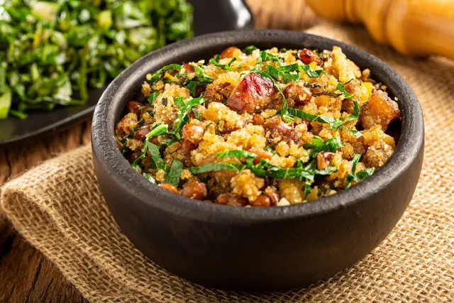
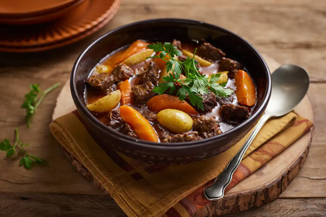
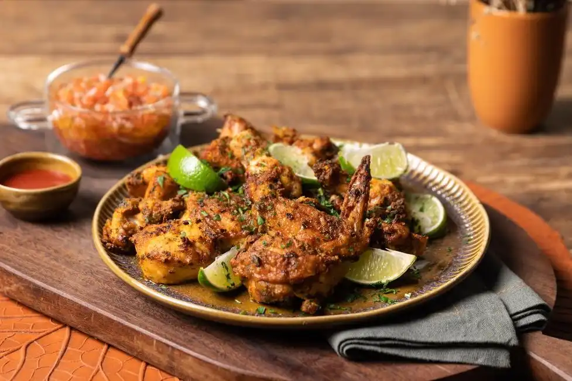

Conheça nossos pratos:
| MENU | ||
|---|---|---|
| Prato | Descrição | Preço |
| Feijão Tropeiro da Dona Carla | Feijão temperado com bacon, linguiça, ovos e farinha de mandioca, servido com arroz branco e couve refogada. | R$28,00 |
| Moqueca Capixaba Tradicional | Peixe fresco cozido com leite de coco, azeite de dendê, pimentões e coentro, acompanhado de arroz e farofa. | R$35,00 |
| Carne de Panela com Legumes | Carne macia cozida lentamente com cenoura, batata e temperos caseiros, servida com arroz e feijão. | R$30,00 |
| Arroz Carreteiro Mineiro | Arroz misturado com carne seca, linguiça e temperos típicos de Minas, finalizado com cheiro-verde fresco. | R$32,00 |
| Frango à Passarinho da Casa | Pedaços de frango temperados e fritos até dourar, acompanhados de vinagrete e mandioca frita crocante. | R$27,00 |
Sugestões da própria Dona Carla:
- Feijão Tropeiro da Dona Carla.
- Carne de Panela com Legumes.
- Frango à Passarinho da Casa.

Feijão Tropeiro da Dona Carla

Carne de Panela com Legumes

Frango à Passarinho da Casa